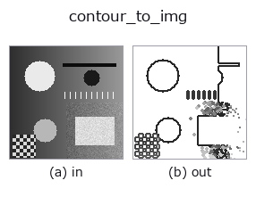

bridge op• Data kinds: contour → image
• Call: fullseye.apply(img, "contour_to_img", a=0.5, b=0.5) (the 2-D model is one image plus two scalar knobs a,b∈[0,1])

*The figure is the actual output on a synthetic 128×128 input. Left: input, right: output. Point clouds are drawn as a top-down scatter (brightness = z), 1-D series as a line plot, volumes as the maximum-intensity projection along z, videos as the middle frame, complex images as magnitude; return values that are not pictures are shown as the values themselves.*
Sweeping knob a (0.1 / 0.5 / 0.9, the other knob at its default):
▸ contour_to_img: knob a sweep (docs site)
Sweeping knob b (0.1 / 0.5 / 0.9, the other knob at its default):
▸ contour_to_img: knob b sweep (docs site)
Stages (the ops that come before → this op, left to right):
▸ contour_to_img: stages (docs site)
On other images (synthetic scene / photo / coins. Top row: inputs, bottom row: their outputs. Knobs at default):
▸ contour_to_img: other inputs (docs site)
> This operator's description has not been translated yet. The original text follows as it is.
XLD 輪郭をその輪郭自身の座標系に描き戻す —— 43 本の op が作るのに、
画像に落とせる op は 1 本も無かった。
図の生成器は輪郭を折れ線で描いているが、それは道具の中の実装で登録 op
からは呼べない(`fullseye.apply` にも Studio にも出てこない)。
• `a → 線の太さ 1 + int(2a)`(1〜3 画素)。
• `b → 濃さの付け方。b < 0.5 は**全部同じ濃さ**、b >= 0.5` は
点数の多い輪郭ほど濃く(順位で 0.15〜0.85 に割り振る)。どれが主要な
輪郭かが一目で分かる。
• 返り値: 輪郭が持つ `shape`(元画像の大きさ)の float64、白地に暗い線。
★輪郭が 1 本も無ければ白紙を返す(黒い板にしない)。
• gallery2d_bridge family guide
• Sample-data catalog (download URLs / licences) — 2-D uses skimage.data (BSD/public domain) plus synthetic images; 3-D lists download URLs for real data sources (Stanford, PDS, …).
• Operator provenance and references — the sources of the research/methods this op family came from.
• The canonical algorithm (author, year) and its uses are named in the family usage guide above.
The program below has been verified to run (same input as the figure). In Studio's help this block becomes buttons that load and run it on the spot.
threshold 0.50 0.50 sk_find_contours 0.50 0.50 contour_to_img 0.50 0.50
▸ Load this pipeline · Load & run
• gallery2d_bridge — py -3.11 examples/gallery2d_bridge.py
image as input)identity · gaussian · mean_box · bilateral · unsharp · median · min_filter · max_filter
bridge)img_to_points · img_to_keypoints · img_to_signal · img_to_projection_profile · img_to_counts · img_to_matrix · img_to_video · img_to_volume
*Provenance: ops.py — 2D operator registry. This per-op note is generated by tools/opdocs.py md (do not hand-edit).*
© 2026 Kazufumi Furuse — Fullseye operator documentation. Licensed under Apache-2.0.
{kind=link}
{kind=link}
{kind=link}
{kind=link}